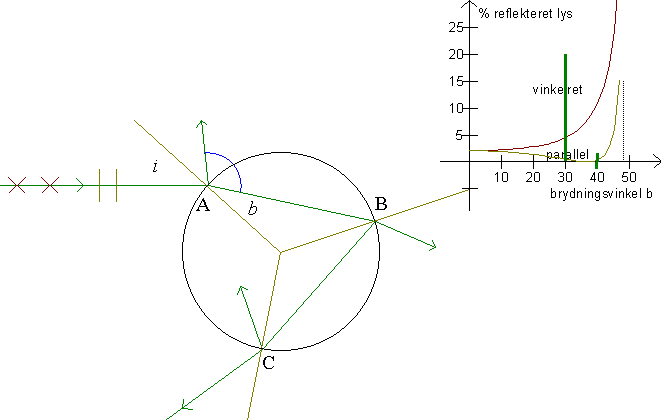
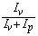

Se først Polarisation, så forstår du nemmere dette billede!
Når en stråle rammer en brydende flade, vil den brydes og spejles. Desuden vil lysets polariseres.

På billedet ses strålegangen for den primære regnbue. I punktet A spejles en del af strålen. Dette lys er tabt, kun den brudte del af strålen går videre. I punktet B tabes den brudte del af strålen og i punktet C tabes den spejlede del. Tre gange på strålens vej gennem dråben forsvinder en del af lyset! Hvor meget lys er der så tilbage i regnbuen?
Sollyset er upolariseret. Dvs. vi kan opfatte lyset, som bestående af lige meget parallelt og vinkelret polariseret lys. Programmet beregner, hvor mange procent, der er tilbage i den spredte stråle af både parallelt og vinkelret polariseret lys. Vi ser, at regnbuens lys er polariseret, og vi ser, at kun en forsvindende del af sollyset, der spredes i dråberne, bliver til regnbuelys.
Udfyld et skema som nedenstående:
| farve |
bølge- længde |
Brydnings- indeks |
Brewster- vinkel |
grænse- vinkel |
Bemærk, at specielt i den primære regnbue ligger brydningsvinklen tæt på Brewstervinklen.
Giv et bud på polarisationsgraden,

af de to regnbuer.
Se igen på »Regnbuens farver«. Vi vil nu tage hensyn til polarisering af lyset, og at intensitet af det spredte lys afhænger af indfaldsvinklen.
Vælg »Regnbuens farver« i programmet Regnbuen. Her giver F6 to grafer, den tidligere betragtede graf og en korrigeret graf. Den korrigerede graf udgør naturligvis en brøkdel af den ukorrigerede graf. F5 giver en korrigeret sum af alle grafer. Denne sidste graf er ganget med 10.
Beskriv de korrigerede grafer. Både for vinkler under den primære regnbue og over den sekundære regnbue og for regnbuerne.
Antag, at man kunne se farver i den primære regnbue for alle de vinkler, hvor der er lige så meget lys, som der er i den sekundære regnbue.
Under hvilke vinkler ville vi da se den primære regnbue?
Kan det være rigtigt, at regnbuen kan oplyse området under sig, f.eks. et bjerg?
Vink: betragt retningerne af de spredte stråler og udregn i et enkelt tilfælde procentdelen af lys i hver enkelt stråle. (se især på stråler lige ved Brewstervinklen)